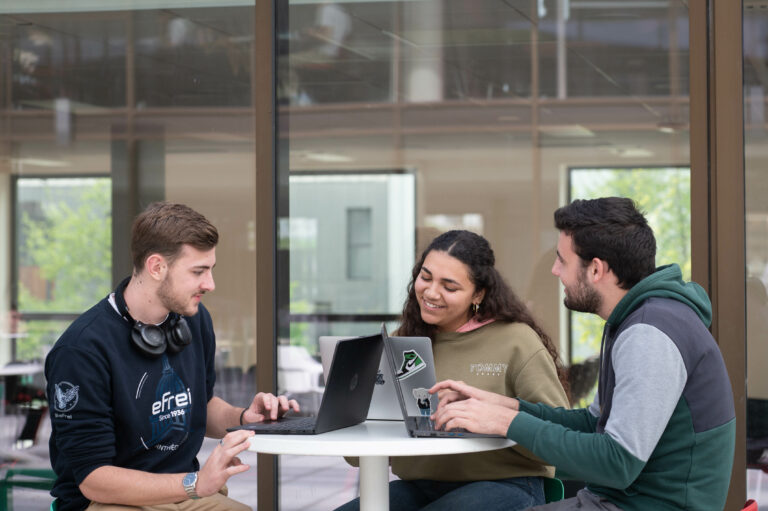

Campus Paris / Villejuif
Un environnement d’études tourné vers les projets, le travail en groupe et les technologies numériques.
École du numérique
L’Efrei forme des étudiants aux métiers de l’informatique, de l’ingénierie et du numérique. Ce site présente les formations, les projets, le campus et les grands domaines étudiés.
Un environnement d’études tourné vers les projets, le travail en groupe et les technologies numériques.
L’Efrei en bref
L’Efrei est une grande école d’ingénieurs et d’experts du numérique. Elle met en avant des formations liées à l’informatique, à la cybersécurité, à la data, à l’intelligence artificielle, aux réseaux et aux infrastructures cloud.
L’Efrei forme des profils capables de comprendre les enjeux techniques du numérique et de les appliquer dans des projets concrets.
Le campus parisien est situé à Villejuif. Il accueille les étudiants dans un environnement pensé pour les cours, les projets et la vie étudiante.
Les formations abordent plusieurs domaines actuels : développement web, cybersécurité, réseaux, data, intelligence artificielle et cloud.
La vie étudiante repose aussi sur les associations, les événements, les projets collectifs et les échanges entre étudiants.

Apprentissage concret
L’informatique s’apprend progressivement : il faut comprendre les notions, les tester, corriger les erreurs et améliorer son travail. Les projets web sont un bon exemple de cette méthode, car ils relient plusieurs compétences en même temps.
Les étudiants apprennent à organiser leurs fichiers, à construire une interface, à adapter le rendu aux écrans et à rendre une page plus interactive.
Parcours du site
Chaque page présente un aspect différent de l’Efrei et de l’informatique : les formations, le campus, la vie étudiante et les informations de contact.
L’accueil donne une vision générale de l’école, de son environnement et des grands domaines numériques.
Les pages formations et vie étudiante détaillent les domaines étudiés, les projets, les TP et la pratique du numérique.
La page contact permet de retrouver les informations utiles et de poser une question grâce au formulaire.